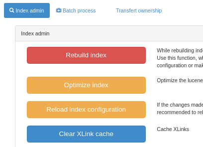

Управление подшаблонами
Каталог поддерживает записи метаданных, которые состоят из фрагментов метаданных. Идея заключается в том, что фрагменты метаданных могут использоваться более чем в одной записи метаданных.
Вот типичный пример фрагмента. Это ответственная сторона, и она может использоваться в одной и той же записи метаданных более одного раза или в нескольких записях метаданных, если это применимо.
<gmd:CI_ResponsibleParty xmlns:gmd="http://www.isotc211.org/2005/gmd" xmlns:gco="http://www.isotc211.org/2005/gco">
<gmd:individualName>
<gco:CharacterString>John D'Ath</gco:CharacterString>
</gmd:individualName>
<gmd:organisationName>
<gco:CharacterString>Mulligan & Sons, Funeral Directors</gco:CharacterString>
</gmd:organisationName>
<gmd:positionName>
<gco:CharacterString>Undertaker</gco:CharacterString>
</gmd:positionName>
<gmd:role>
<gmd:CI_RoleCode codeList="./resources/codeList.xml#CI_RoleCode" codeListValue="pointOfContact"/>
</gmd:role>
</gmd:CI_ResponsibleParty>
Фрагменты метаданных, которые сохраняются в базе данных каталога, называются подшаблонами. В основном это делается по историческим причинам, так как подшаблон подобен шаблонной записи метаданных, поскольку он может быть использован в качестве «шаблона» для создания новой записи метаданных.
Фрагменты могут быть вставлены в запись метаданных двумя способами:
- копированием/вставкой
- по ссылке (если включена поддержка xlink. См. Metadata XLink).
При использовании XLinks, если фрагмент обновляется, то связанный с ним фрагмент во всех записях метаданных также будет обновлен (проверьте кэш XLink).
Фрагменты могут быть созданы путем сбора (см. Сбор фрагментов метаданных для поддержки повторного использования) или импортированы с помощью страницы импорта метаданных.
В этом разделе руководства описано:
- как управлять каталогами подшаблонов
- как извлекать фрагменты из существующего набора записей метаданных и сохранять их в виде подшаблонов
- как управлять кэшем фрагментов, используемым для ускорения доступа к фрагментам, которых нет в локальном каталоге
Управление каталогами подшаблонов
Существуют некоторые различия между работой с подшаблонами и записями метаданных. В отличие от записей метаданных, подшаблоны не имеют согласованного корневого элемента, используемая ими схема метаданных может быть нераспознаваема, они не появляются в основных результатах поиска (если только не являются частью записи метаданных). Поэтому панель редактора позволяет искать и управлять привилегиями для записей каталогов.

На панели редактора выберите Управление каталогом, чтобы получить доступ к редактору записей каталога:

Если вкладку Организации и контакты не видно, убедитесь, что были созданы подшаблоны для контактов для своего профиля метаданных
и были загружены их с помощью раздела Метаданные и шаблоны.
На этой странице редакторы могут выбрать тип каталога с помощью верхних вкладок, редактировать/удалять/импортировать новые подшаблоны.
Для импорта новых записей используйте страницу импорта метаданных и выберите соответствующий тип записи:

Как и записям метаданных, им присваивается целочисленный идентификатор, и они хранятся в таблице метаданных каталога (с полем шаблона, установленным на «y»).
Вставьте запись каталога в запись метаданных
В редакторе метаданных каталог можно использовать, например, для заполнения контактов.

Откройте селектор каталогов, выберите контакт, а затем выберите роль контакта.

Извлечение вложенных шаблонов из записей метаданных
На многих сайтах уже существуют записи метаданных с общей информацией, например. контактная информация в элементе ISO CI_Contact. Записи каталога, подобные этим, могут быть извлечены из выбранного набора записей метаданных с помощью API "Extract subtemplates".
Чтобы использовать эту функцию, необходимо выполнить следующий набор действий:
- Убедитесь, что вы понимаете, что такое XPath - смотрите, например, http://www.w3schools.com/xpath/default.asp.
- Определить фрагменты метаданных, которыми они хотели бы управлять как подтемплатами повторного использования в записи метаданных.
Это можно сделать с помощью XPath. например, XPath
.//gmd:CI_ResponsiblePartyопределяет всю ответственную сторону в записи. Пример такого фрагмента (взятого из одной из выборочных записей) показан в следующем примере:
<gmd:CI_ResponsibleParty xmlns:gmd="http://www.isotc211.org/2005/gmd" xmlns:gco="http://www.isotc211.org/2005/gco">
<gmd:individualName>
<gco:CharacterString>Jippe Hoogeveen</gco:CharacterString>
</gmd:individualName>
<gmd:organisationName>
<gco:CharacterString>FAO - NRCW</gco:CharacterString>
</gmd:organisationName>
<gmd:positionName>
<gco:CharacterString>Technical Officer</gco:CharacterString>
</gmd:positionName>
<gmd:contactInfo>
<gmd:CI_Contact>
<gmd:phone>
<gmd:CI_Telephone>
<gmd:voice gco:nilReason="missing">
<gco:CharacterString/>
</gmd:voice>
<gmd:facsimile gco:nilReason="missing">
<gco:CharacterString/>
</gmd:facsimile>
</gmd:CI_Telephone>
</gmd:phone>
<gmd:address>
<gmd:CI_Address>
<gmd:deliveryPoint>
<gco:CharacterString>Viale delle Terme di Caracalla</gco:CharacterString>
</gmd:deliveryPoint>
<gmd:city>
<gco:CharacterString>Rome</gco:CharacterString>
</gmd:city>
<gmd:administrativeArea gco:nilReason="missing">
<gco:CharacterString/>
</gmd:administrativeArea>
<gmd:postalCode>
<gco:CharacterString>00153</gco:CharacterString>
</gmd:postalCode>
<gmd:country>
<gco:CharacterString>Italy</gco:CharacterString>
</gmd:country>
<gmd:electronicMailAddress>
<gco:CharacterString>jippe.hoogeveen@fao.org</gco:CharacterString>
</gmd:electronicMailAddress>
</gmd:CI_Address>
</gmd:address>
</gmd:CI_Contact>
</gmd:contactInfo>
<gmd:role>
<gmd:CI_RoleCode codeList="http://standards.iso.org/ittf/PubliclyAvailableStandards/ISO_19139_Schemas/resources/codelist/ML_gmxCodelists.xml#CI_RoleCode"
codeListValue="pointOfContact"/>
</gmd:role>
</gmd:CI_ResponsibleParty>
-
Определите и запишите XPath к полю или полям фрагмента, текстовое содержимое которых будет использоваться в качестве идентификатора подшаблона. Этот XPath должен быть относительным к корневому элементу фрагмента, определенному на предыдущем шаге. Например, в приведенном выше фрагменте мы можем выбрать
.//gmd:electronicMailAddress/gco:CharacterString/text()в качестве идентификатора для создаваемых фрагментов. -
На странице API выберите операцию registries / collect:

- Заполните форму информацией, собранной на предыдущих шагах.
- Извлеченные подшаблоны можно предварительно просмотреть с помощью режима GET, а после проверки использовать метод PUT для сохранения результатов в каталоге.
Наконец, перейдите в интерфейс управления каталогом подшаблонов, и вы сможете выбрать корневой элемент ваших подшаблонов, чтобы просмотреть извлеченные подшаблоны.
Индексирование подшаблонов основано на схеме (подробности см. в папке index-fields). В настоящее время ISO19139 индексирует подшаблоны, используя в качестве корневого элемента:
- gmd:CI_ResponsibleParty
- gmd:MD_Distribution
- gmd:CI_OnlineResource
- gmd:EX_Extent
В стандарте ISO19115-3
- cit:CI_Responsibility
- *[mdq:result]
- gex:EX_Extent
Другие примеры конфигурации для сбора:
- Стороны в ISO19115-3
xpath:.//cit:CI_ResponsibilityidentifierXpath:.//cit:electronicMailAddress/*/text().
- Спецификации качества в стандарте ISO19115-3
xpath:.//*[mdq:result]identifierXpath:.//cit:title/*/text()
- Экстент в ISO19115-3
xpath:.//gex:EX_ExtentidentifierXpath:concat(.//gex:westBoundLongitude/*/text(), ', ', .//gex:eastBoundLongitude/*/text(), ', ', .//gex:southBoundLatitude/*/text(), ', ', .//gex:northBoundLatitude/*/text())илиgex:description/*/text().
- Ограничения в ISO19115-3
xpath:.//mri:resourceConstraints/*
Синхронизация подшаблонов с записями метаданных
После создания каталог предоставляет возможность синхронизировать записи метаданных с записями каталога. Для этого используйте страницу тестирования API.
Процесс синхронизации использует те же параметры, что и процесс сбора, с двумя дополнительными аргументами:
propertiesToCopyдля сохранения некоторого элемента, который может быть определен во фрагменте в метаданных (например, роль контакта)substituteAsXLink, чтобы указать, следует ли использовать режим копирования/вставки или режим XLink.

Управление кэшем фрагментов
Если записи метаданных в вашем каталоге содержат фрагменты ссылок с внешних сайтов, каталог кэширует эти фрагменты после первого поиска, чтобы уменьшить объем сетевого трафика и ускорить отображение записей метаданных в результатах поиска.
Кэш обрабатывается автоматически с помощью системы кэширования Java (JCS). JCS интеллектуально обрабатывает большие кэши, определяя:
- определения максимального количества кэшируемых объектов
- использования максимально возможного объема оперативной памяти перед переходом на вторичное хранилище (диск)
- обеспечения постоянства кэша: кэш сохраняется на диск при завершении работы веб-приложения и восстанавливается с диска при перезапуске.
Настроить параметры JCS в GeoNetwork можно с помощью файла конфигурации JCS в INSTALL_DIR/web/geonetwork/WEB-INF/classes/cache.ccf.
Некоторые операции в каталоге (например, сбор урожая), генерирующие фрагменты метаданных, будут автоматически обновлять кэш XLink при генерации нового фрагмента. Однако если фрагменты будут связаны с внешнего сайта, то, в зависимости от частоты изменений, придется вручную обновлять кэш XLink. Для этого необходимо перейти на страницу администрирования и выбрать функцию «Очистить кэш XLink и перестроить индекс записей с XLinks», как показано на следующем скриншоте страницы «Администрирование».
